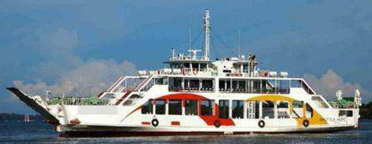

200 PAX 482 GRT Double Ended RORO Ferry Blt 2001 Jp
/ informed by BNC SHIPBROKING CO., LTD.
(18-532)

- TYPE : LCT TYPE OF CAR-FERRY (PASSENGER & VEHICLE FERRY)
- BUILT : JUNE 2001, NAIKAI ZOSEN, JAPAN (RE-BUILT 2004)
- FLAG : BRUNEI DARUSSALAM
- CLASS : 100A1 ROLL ON-ROLL OFF PASSENGER / VEHICLE FERRY,
COSTAL SERVICE
- LOA/L/B/D : 49.90 / 43.00 / 11.00 / 3.59 M
- DWT/draft/GRT : 248 T / 2.65 M / 482 T
- MAIN ENGINE : DAIHATSU DKM20, 1,300 PS X 900 RPM X 2 UNITS (TOTAL 2,600 PS)
- AUX ENGINE : DAIHATSU M2SG-A, 143 PS X 1,200 RPM X 2 SETS
- BOW THRUSTER : FITTED
- OILY WATER SEPARATOR/ SEWAGE TREATMENT PLANT : FITTED / FITTED
- PROPELLER / SHAFT : 2
- FO TYPE/CONS. : BUNKER A 5 ton/day
- SPEED : SERVICE 13.8 KNOTS, TRIAL MAX 15.64 KNOTS
- PASSENGER CAPACITY : 204 PAX (PASSENGER 200 P, CREW 4 P)
- CAR LOADING CAPACITY : SEDAN 40 UNITS OR 20 SEDAN + 5 TRUCKS
- VEHICLE CLEARANCE : 4 M
- RAMPWAY : BOW & STERN (DOUBLE ENDED)
- OTHER TANK CAPACITY : FO 50 T
- LOCATION : BRUNEI
Information History
- 180713 : She is available for sale.